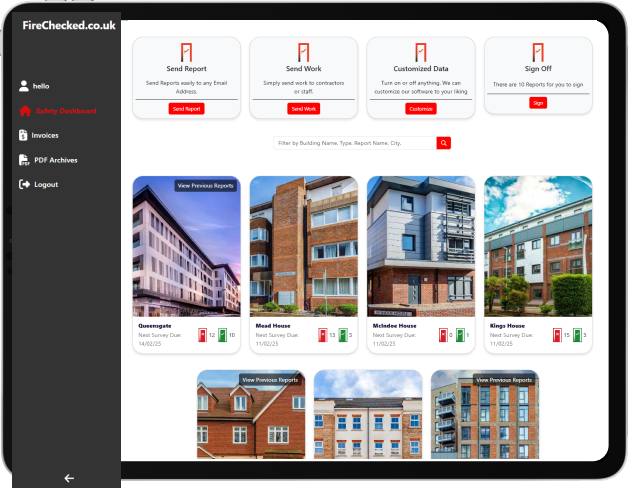
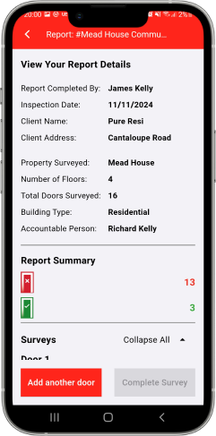

FireChecked
is a cloud-based application that has been developed for everyone involved in Passive Fire Product Manufacture, Installation, Inspection, Management and Maintenance.
about
Why FireChecked
Fire Door Inspections
Compatible with any device, our innovative app enables you to complete and update surveys seamlessly, anytime and anywhere.

Report and Track
- - Fire Rating
- - Certification
- - Maintenance
- - Repair Schedules
Repair
Effortlessly capture and upload photos directly to the relevant survey, ensuring seamless documentation and organization.
We Create The Golden Thread
Our sights don't just stop at fire doors! Our aim within this year is to start rolling out extension modules that cover data capture, inspection and tagging of other passive fire products across a floorplate. The other products on our initial development list include:
Making Fire Safety Simple For You
Simplify Fire Safety Management
Simplify fire safety management with our user-friendly platform. Access a dashboard offering an at-a-glance view of all fire door reports for streamlined oversight. Centralize your fire safety data, automate scheduling, and receive real-time reporting to ensure compliance with UK regulations. Effortlessly manage multiple properties, access interactive floor plans, and seamlessly share documentation with your team. Protect your occupants and properties with our cutting-edge fire safety technology that's efficient, accurate, and easy to use.


The Future is not just Fire Doors...
Our sights don't just stop at fire doors! Our aim within this year is to start rolling out extension modules that cover data capture, inspection and tagging of other passive fire products across a floorplate. The other products on our initial development list include: